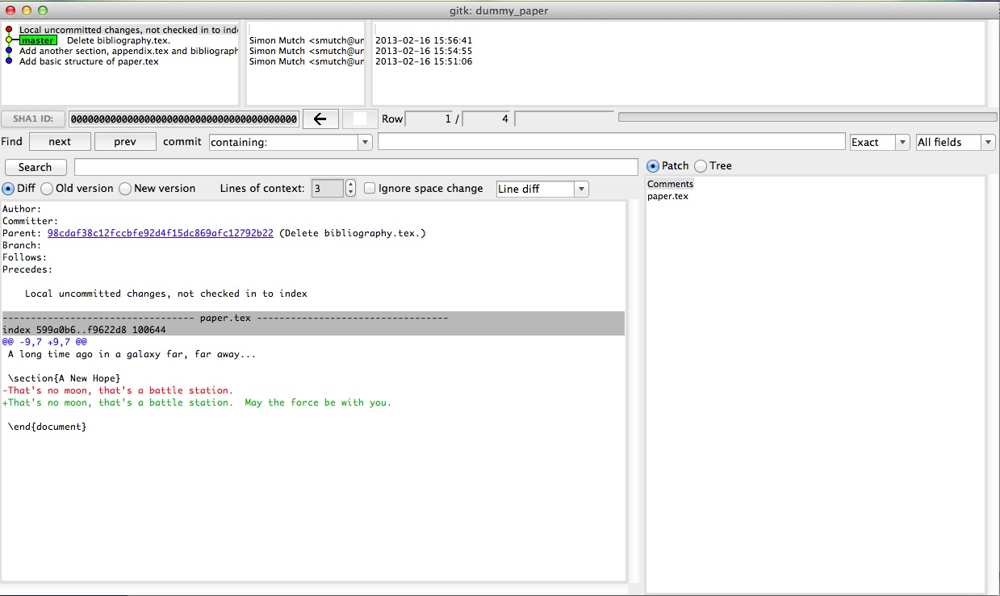

The command git log displays the commit history of the current branch. If you try it in your dummy_paper directory you should see something like the following:
commit 98cdaf38c12fccbfe92d4f15dc869afc12792b22
Author: Simon Mutch <smutch@unimelb.edu.au>
Date: Sat Feb 16 15:56:41 2013 +1100
Delete bibliography.tex.
commit cc745dbfdf0421c7d84d72c75d3a52c517665fe7
Author: Simon Mutch <smutch@unimelb.edu.au>
Date: Sat Feb 16 15:54:55 2013 +1100
Add another section, appendix.tex and bibliography.tex.
commit f615b15149a633c47f690bf891e39cb80029a71b
Author: Simon Mutch <smutch@unimelb.edu.au>
Date: Sat Feb 16 15:51:06 2013 +1100
Add basic structure of paper.tex
As you can see git log provides the unique reference (SHA-1 checksum) for each commit, the author name and email address, as well as the date and commit message. The entries are listed in reverse chronological order (i.e. the most recent commit first).
There are a whole host of flags and arguments you can pass to git log to change what information is presented and how it looks. For example, try typing:
% git log --pretty=format:"%h %s <%an>" --graph
The result should be something like this:
* 98cdaf3 Delete bibliography.tex. <Simon Mutch>
* cc745db Add another section, appendix.tex and bibliography.tex. <Simon Mutch>
* f615b15 Add basic structure of paper.tex <Simon Mutch>
To investigate all the different options for formatting your log output, try looking at the help for the log command:
% git help log
Tip
git help <command> can be used to get the documentation for almost every Git command. If you type git help on it’s own, you will also be presented with a list of all major commands for reference.
Its useful to be able to have this concise view of the log without having to type the long command every time. We can achieve this by adding the command as an alias. Try this command:
% git config --global alias.lg 'log --pretty=format:"%h %s <%an>" --graph'
Now you can get the concise log view by simply typing:
% git lg
Often we want to compare (or “difference”) commits to see how things have changed. To do this we use the git diff command. For example, to see how our paper has changed between the most recent commit and our first commit I would type:
% git diff ef5ca0a
Your commit reference will be different to mine however, and so you must substitute the appropriate reference in place of ef5ca0a. Remember, you can get this reference using the git log command as outlined above.
Once you run git diff successfully, you will see something like this:
diff --git c/appendix.tex w/appendix.tex
new file mode 100644
index 0000000..e69de29
diff --git c/paper.tex w/paper.tex
index 3290236..599a0b6 100644
--- c/paper.tex
+++ w/paper.tex
@@ -8,5 +8,8 @@
\section{Introduction}
A long time ago in a galaxy far, far away...
+\section{A New Hope}
+That's no moon, that's a battle station.
+
\end{document}
The + signs show text which has been added since our first commit, and any - signs would indicate text which has been removed. At the top of the diff, we can also see that we have added the appendix.tex file.
By specifying only one commit reference when calling git diff we actually implicitly ran:
% git diff ef5ca0a..HEAD
HEAD is a shortcut for the commit reference pointing to the most recent relevant commit. To access the second most recent commit we can use the shortcut ^HEAD. These shortcuts are handy to remember when comparing commits.
git diff can also be used to see how the current state of files have changed since the last commit. To do this simply run the command with no arguments.
Exercise 2a
Add a sentence to the section “A New Hope” of paper.tex but don’t commit the change. Now try running:
% git diff
and make sure you understand the results.
Another useful way to view the commit history of your repository is to use the gitk GUI program which is packaged with Git. This program displays both the commit history and relevant diffs all together.
Another useful way to visualise the history to is to look at a single file and see in which commit each line was last changed. Imagine that we identified a bug in a line of code. We could then use this technique to see how long ago that bug was introduced (and by who!). Try this:
% git blame paper.tex --date=relative
and you should see a copy of paper.tex with the reference, author and time of the last commit where each line was modified.
| Command | Description |
|---|---|
| git log | View the commit history for the current branch. |
| git diff <commit> <commit> | Compare (difference) two commits. |
| gitk | View the commit history in a GUI. |
| git blame <file> | See when each line of a file was last changed. |